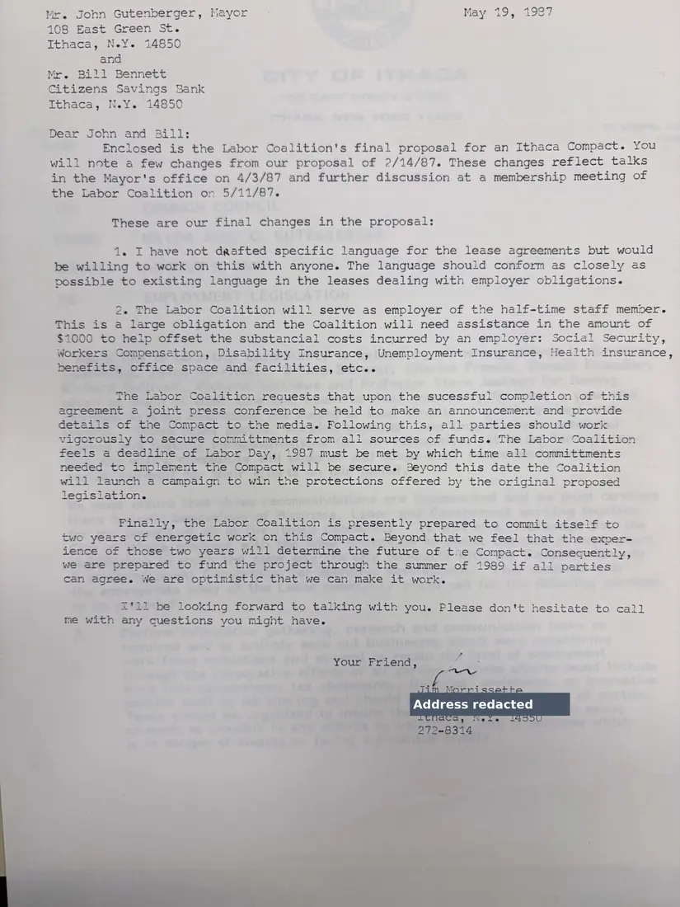

Letter, 1 page
Final proposal for the Ithaca Compact
May 19, 1987
Morrissette sends the coalition's final proposal for the Ithaca Compact. In it the coalition offers to act as employer of a half-time staff member, asks for $1,000 from the city, and hopes for a press conference announcing the agreement.
Download or cite this itemPages


(open zoom view)A personal home address has been covered on this page.
Read the page text (machine-read, mostly readable)
This text was generated automatically from the photograph and has not been corrected. The image is the authoritative record.
Mr. John Gutenberger, Mayor 108 East Green St. Ithaca, NeY. 14850 and Mr. Bill Bennett Citizens Savings Bank Ithaca, N.Y. 14850 May 19, 1987 Dear John and Bill: Enclosed is the Labor Coalition's final proposal for an Ithaca Compact. You will note a few changes from our proposal of 2/14/87. These changes reflect talks in the Mayor's office on 4/3/87 and further discussion at a membership meeting of the Labor Coalition on 5/11/87. These are our final changes in the proposal: 1. I have not daafted specific language for the lease agreements but would be willing to work on this with anyone. The language should conform as closely as possible to existing language in the leases dealing with employer obligations. 2. The Labor Coalition will serve as employer of the half-time staff memper. This is a large obligation and the Coalition will need assistance in the amount of $1000 to help offset the substancial costs incurred by an employer: Social Security, Workers Compensation, Disability Insurance, Unemployment Insurance, Health insurance, benefits, office space and facilities, etc.. The Labor Coalition requests that upon the sucessful completion of this agreement a joint press conference be held to make an announcement and provide detaiis of the Compact to the media. Following this, all parties should work vigorously to secure committments from ali sources of funds. The Lebor Coalition feels a deadline of Labor Day, 1987 must be met by which time all committments needed to implement the Compact will be secure. Beyond this date the Coalition will launch a campaign to win the protections offered by the original proposed legislation. Finally, the Labor Coalition is presently prepared to commit itself to two years of energetic work on this Compact. Beyond that we feel that the exper- ience of those two years will determine the future of thie Compact. Consecuently, we are prepared to fund the project through the summer of 1989 if all parties can agree. We are optimistic that we can make it work. i'il be looking forward to talking with you. Please don't hesitate to call me with any questions you might have. ewe re Your Friend, ” wis Of By pm en cae ng ane _ Address redacted 2 et a tos ope © face
See something wrong, or recognize a person or event? Send a correction. If you hold rights in this item or think it should not be public, write to the same address.